I foråret 2026 udgav Dansk Erhverv en lagerhåndbog for webshops, der vokser. Vi skrev den.
Den handler ikke om systemer. Den handler om det, du kan gøre i næste uge uden at købe noget: hvor varerne skal stå, hvem der tjekker hvad, og hvilke to eller tre tal der faktisk fortæller dig, om det går bedre.
E-logistik Guide 2026, lagerhåndbog for den voksende webshop
- Udgivet af Dansk Erhverv, skrevet i samarbejde med SmartPack
- 13 kapitler i tre dele: fundamentet uden systemer, det der rammer bundlinjen, og hvornår du er klar til at skrue op
- Bygget på drift fra reoler i garagen til lagre med flere hundrede tusinde ordrer om året
👉 Vil du have det gennemgået på dit eget lager? Tal med SmartPack
Knap halvdelen af netbutikkerne (49 procent) mener, deres logistik giver dem en fordel over for de nærmeste konkurrenter. Blandt de store virksomheder er det tre ud af fire (73 procent), mens de små og mellemstore i langt lavere grad oplever det. Det er den forskel, guiden handler om.
Kilde: Dansk Erhverv, Logistikanalyse 2025. Webanalyse blandt danske netbutikker og omnichannel-virksomheder, gennemført 20. november til 10. december 2025. 1.459 skemaer udsendt, 84 svar på dette spørgsmål.
De tre regnestykker folk husker
Guiden er fuld af gode råd. Det er de her tre, folk skriver til os om bagefter.
En pakkefejl koster omkring 350 kr.
Returfragt 50, ny forsendelse 50, kundeservice 100, ekstra håndtering 50, risiko for tabt salg 100. Ti fejl om ugen er over 180.000 kr. om året, og det er regnet konservativt.
Tallet gør noget ved en samtale. De fleste ved godt, at fejl koster. De færreste har ganget det op.
Fra over 3 procent fejl til under 1
En webshop i guiden lå på over 3 procent pakkefejl. De indførte dobbelttjek, hvor én plukker og en anden pakker, og begyndte at skrive fejlene ned og se på årsagerne. De kom under 1 procent.
Det krævede ikke et system. Det krævede en aftale om, hvem der gør hvad.
Plukkevognen der er tjent hjem på en uge
Står folk og venter ti minutter om dagen, fordi der ikke er en ledig vogn, koster det omkring 40 kr. om dagen. På tyve arbejdsdage er det 800 kr. Vognen kostede 250.
Det er den slags regnestykke, der er værd at lave, inden man begynder at tale om større investeringer.
De fem nøgletal
Kapitel 9 er det, flest vender tilbage til. Ikke fordi tallene er avancerede, men fordi de er få nok til at blive skrevet ned:
- Pakkefejlsprocent. Ordrer med fejl delt med sendte ordrer, gange 100. Sender du 1.000 ordrer og 15 har en fejl, er den 1,5 procent.
- Returprocent. Returordrer delt med sendte ordrer, gange 100. Del den senere op i fortrydelse, defekt og forkert størrelse, så du ved, om det er lageret eller produktteksten.
- Pluk pr. time. Enten færdige ordrer eller plukkede ordrelinjer. Det vigtige er ikke præcisionen, men at du måler ens hver gang og kan sammenligne før og efter.
- Gennemløbstid. Fra ordren kommer ind, til pakken er klar. Eksploderer den, hver gang returbunken vokser, ved du hvor problemet er.
- Bundet lager i langsomme varer. Træk listen over varer uden salg i 90 dage og læg kostprisen sammen. Ligger en stor del af pengene i C-varer, er det dem, der skal ud.
Guidens eget råd: vælg to eller tre, lav et simpelt ark med en kolonne pr. uge, og skriv ved siden af, hvad I har ændret. “Uge 12: flyttede A-zonen tættere på pakkebordet.” Så kan du se, om ændringen virkede.
Hvis du skal bruge et lagerhotel
Kapitel 13 handler om 3PL, og det mest brugbare i det kapitel er formuleringerne. En aftale bør skrive serviceniveauet ud i noget, man kan måle, for eksempel: 99,5 procent af alle ordrer plukket og klar til afsendelse samme dag ved bestilling før kl. 14.
Og så det, de fleste glemmer at aftale: hvad der sker, hvis du ikke rammer det volumen, I har aftalt, og hvordan I kommer fra hinanden igen. Exit-planen hører til i aftalen fra dag ét, ikke i den samtale, hvor I allerede er uenige.
De 13 kapitler, og hvor du læser videre
Guiden giver rammen. Artiklerne herunder går i dybden med hvert emne.
Lagerindretning og flow

Tænk flow, ikke flot. Varerne skal bevæge sig den korteste vej fra hylde til pakkebord, og gangene skal passe til den måde, I faktisk arbejder på.
Læs videre: Warehouse layout: sådan indretter du et lager der virker
ABC-analysen
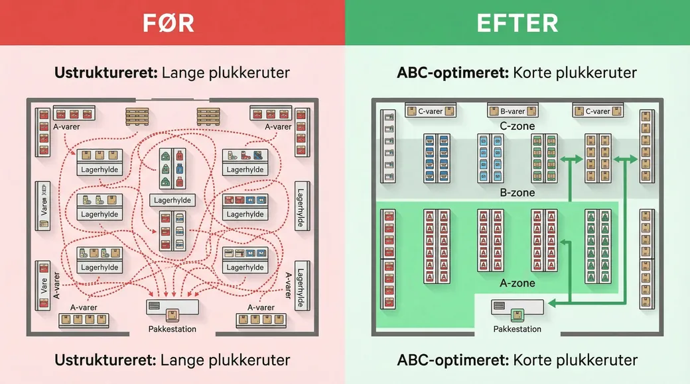
Omkring 20 procent af varerne står for cirka 80 procent af salget. A-varer er de 20 procent, B er de næste 30, og C er de sidste 50. Går du 15 meter efter den T-shirt, du sælger 50 af om dagen, ligger den forkert.
Læs videre: ABC-analyse af sortiment: find dine vigtigste varer
Plukkestrategi
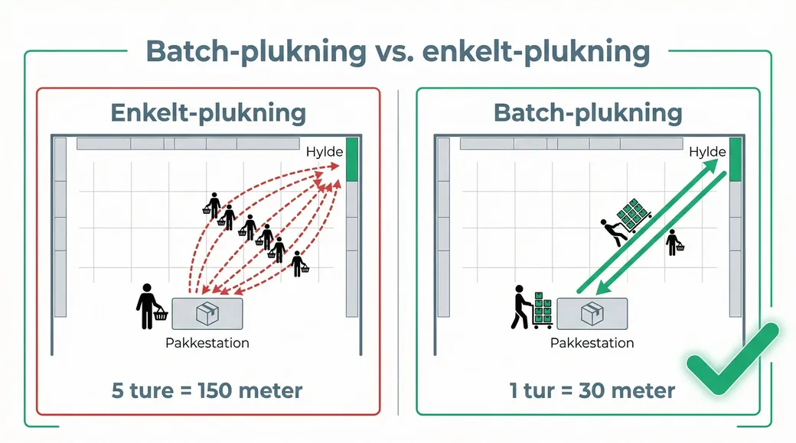
Arbejd smartere, ikke hårdere. Skal I plukke én ordre ad gangen, flere på én gang, eller dele lageret op i zoner? Svaret afhænger af, hvor mange linjer der er på en ordre.
Læs videre: Sådan optimerer du plukkehastighed
De rigtige redskaber
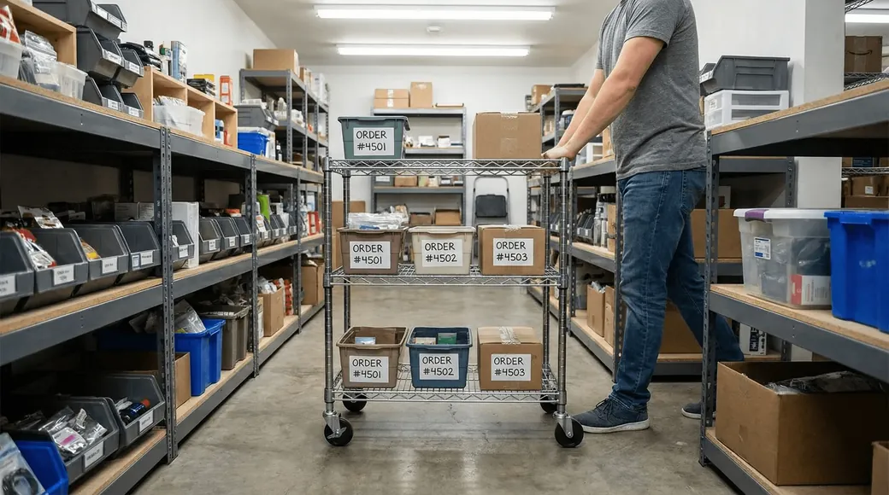
Når hardware tjener sig hjem. Guidens eksempel: en plukkevogn til 250 kr. sparer ti minutter om dagen. Ti minutter er cirka 40 kr., og på tyve arbejdsdage er det 800 kr. Vognen er tjent hjem første uge.
Læs videre: Pakkebordet er din flaskehals (du ved det bare ikke)
Lagerstyring uden system
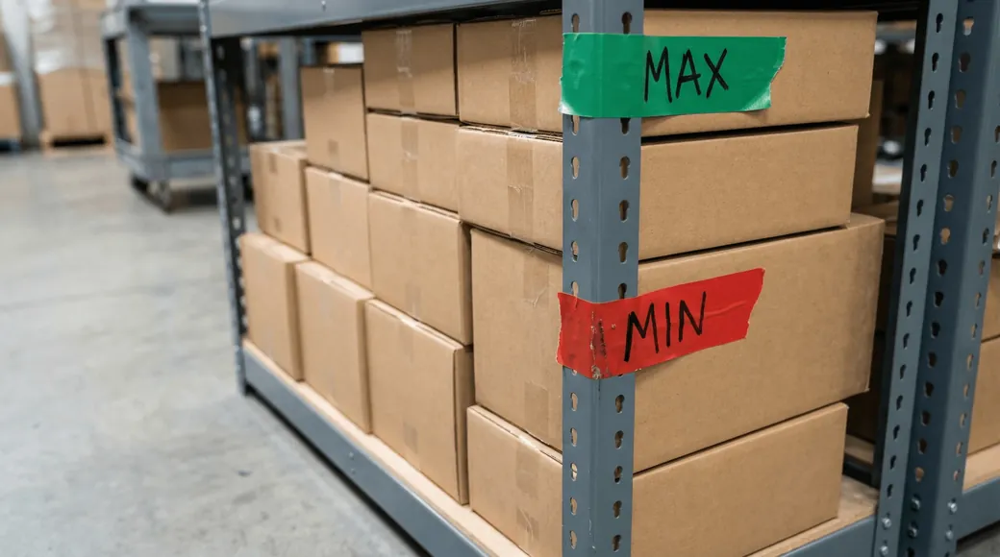
Min og max, en rød streg på reolen, en liste ved pakkebordet og en fast ugedag til bestilling. To personer kan holde overblik på den måde, og god datahygiejne gør det nemmere at skifte til et system senere.
Læs videre: Hvad er sikkerhedslager? Formel og beregning
Pakkefejl, den stille dræber
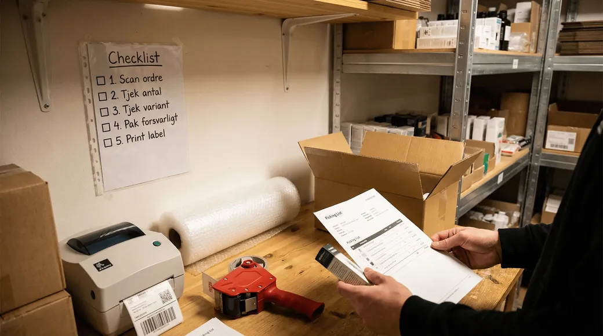
Guidens regnestykke: returfragt 50 kr., ny forsendelse 50 kr., kundeservice 100 kr., ekstra håndtering 50 kr., risiko for tabt salg 100 kr. Cirka 350 kr. pr. fejl. Ti fejl om ugen er over 180.000 kr. om året.
Læs videre: Vi laver for mange pakkefejl
Returer og reklamationer
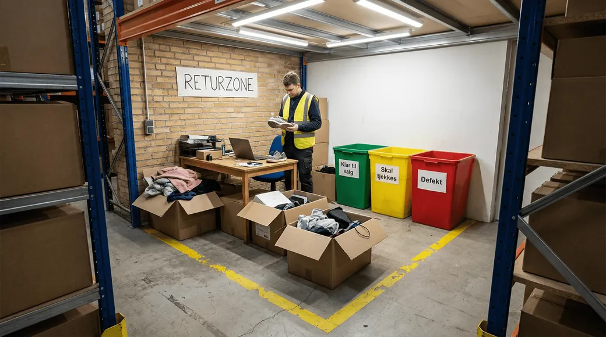
Sådan undgår du at miste overblikket, når returbunken vokser hurtigere end du når at behandle den.
Læs videre: Sådan reducerer du din returrate uden at miste kunder
Svind og lageroptælling
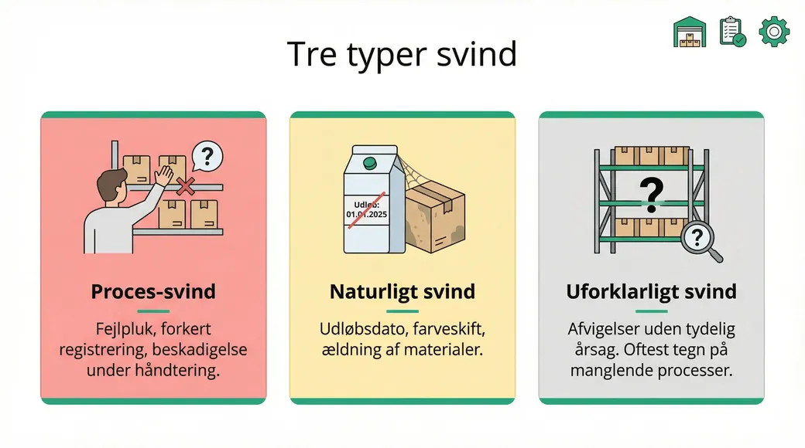
Afsæt en halv time en fast ugedag til at tælle et lille område, i stedet for at lukke lageret ned en gang om året.
Læs videre: Hvad er cycle counting? Løbende lagerrevision forklaret
Nøgletal på lageret
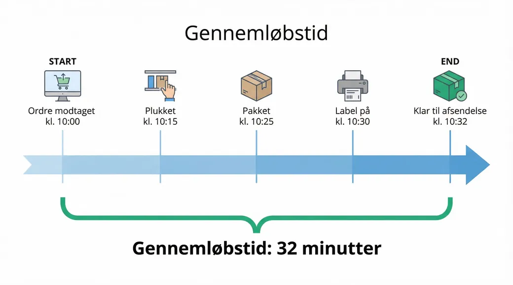
Fem tal med regneformler: pakkefejlsprocent, returprocent, pluk pr. time, gennemløbstid og bundet lager i langsomme varer. To til tre tal, du faktisk får skrevet ned, er mere værd end ti, der aldrig bliver brugt.
Læs videre: Måltal på lageret: hvorfor ét tal ikke rækker
Fragt
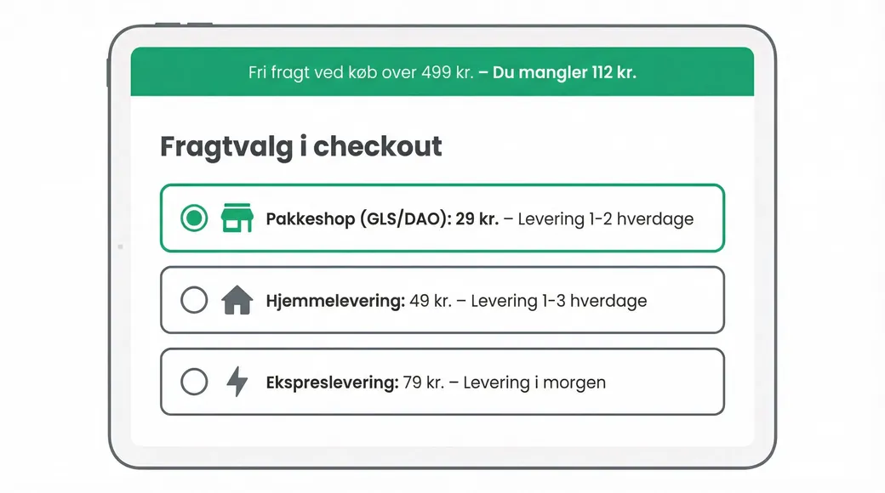
Hvad man rent faktisk kan gøre ved fragtprisen, og hvad man ikke kan.
Læs videre: Fragtforhandling: hvad du kan spare
Emballage
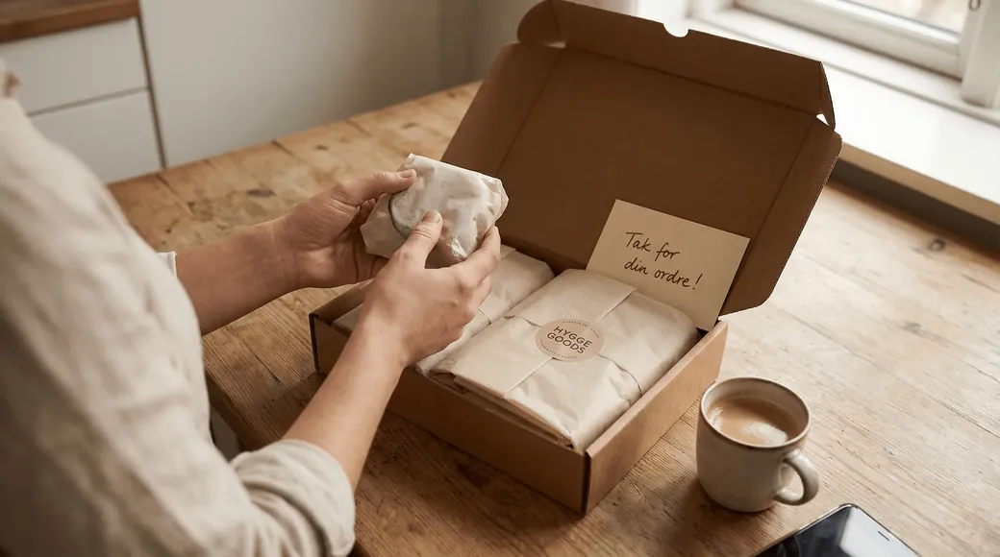
Det sidste indtryk, der betyder meget. Og den post, hvor mange betaler for luft.
Læs videre: Emballageomkostninger: hvad du betaler for
Store kampagnedage
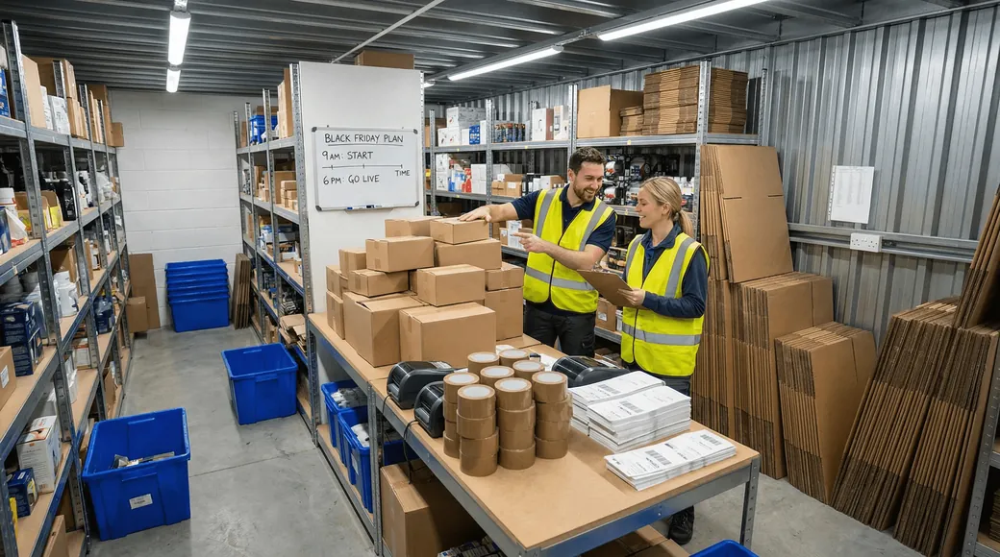
Black Friday som stresstest for lageret. Det der knækker den dag, var som regel skrantende i forvejen.
Læs videre: Black Friday lager: forberedelse der faktisk virker
3PL
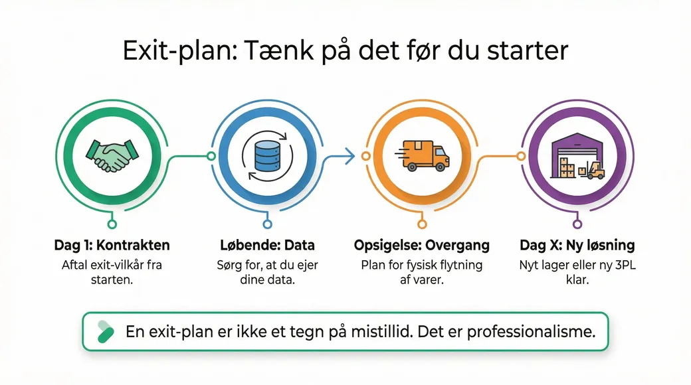
Hvornår det giver mening at flytte lageret ud, og hvornår det ikke gør.
Læs videre: Hvornår skal du outsource dit lager til 3PL?

Har du styr på det?
Warehouse Warrior er et lille spil, der stiller dig spørgsmål om det, de 13 kapitler handler om. Det tager et par minutter.
🎓 Test din videnOfte stillede spørgsmål
Hvem har skrevet E-logistik Guide 2026?
Guiden er udgivet af Dansk Erhverv og skrevet i samarbejde med SmartPack. Indholdet bygger på drift fra små webshops til lagre med flere hundrede tusinde ordrer om året, ikke på lærebøger.
Hvad koster en pakkefejl ifølge guiden?
Omkring 350 kr. Det dækker returfragt 50 kr., ny forsendelse 50 kr., kundeservice 100 kr., ekstra håndtering 50 kr. og risiko for tabt salg 100 kr. Ved ti fejl om ugen er det over 180.000 kr. om året.
Hvilke nøgletal anbefaler guiden at starte med?
To til tre stykker, typisk pakkefejlsprocent, returprocent og pluk pr. time. Pointen er, at få tal der bliver skrevet ned hver uge er mere værd end ti, der aldrig bliver brugt.
Skal jeg have et lagersystem for at bruge guiden?
Nej. De første fem kapitler handler udelukkende om det, du kan gøre uden systemer: indretning, ABC-analyse, plukkestrategi, redskaber og min/max-styring med en rød streg på reolen.
Hvor henter jeg guiden?
Hos Dansk Erhverv, der har udgivet den. Der ligger den frit tilgængeligt.